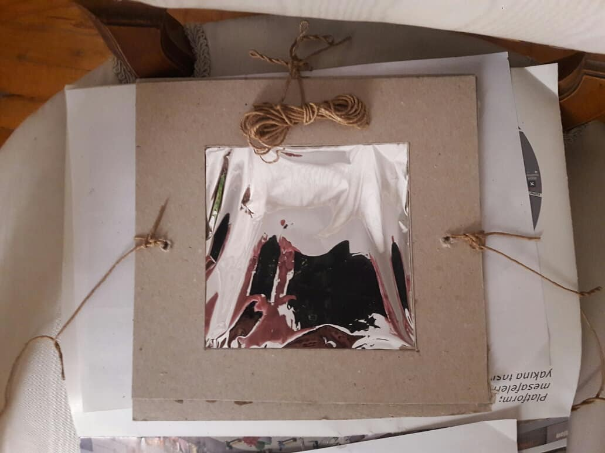
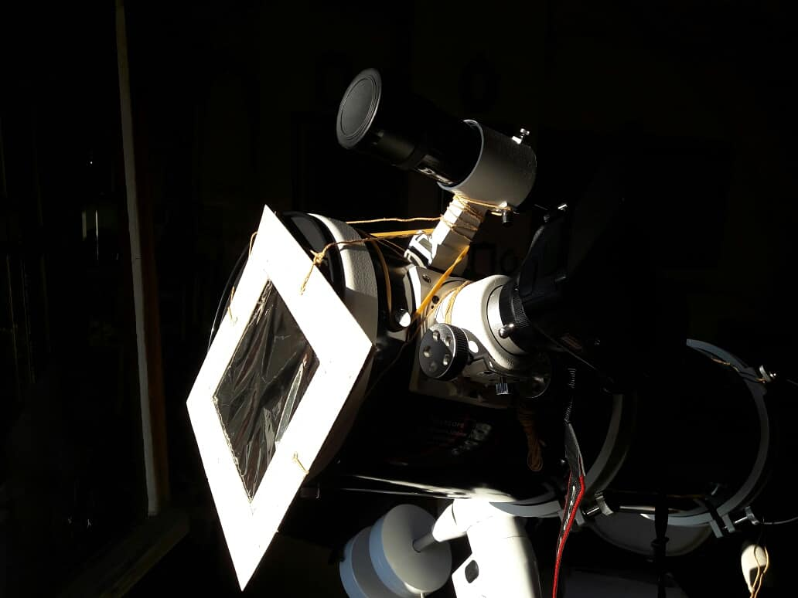
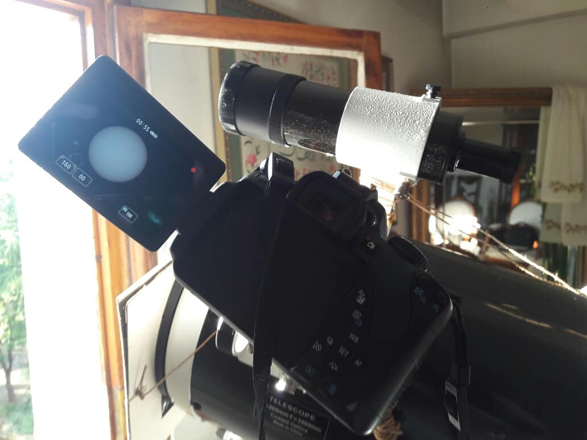

Güneş’in Gökyüzünde Değişen Görünür Büyüklüğü
Çalışmanın Amacı
Bu çalışmada, Dünya’nın Güneş çevresindeki yönüngesinde Güneş’e en yakın ve en uzak olduğu tarihlerde teleskop ile fotoğraflarının çekilmesi ve bu fotoğraflar üzerinde yapılacak karşılaştırma ile yıldızın çapındaki değişimin görüntülenmesi amaçlanmıştır. Çalışmadaki fotoğraflar, ön-açıklığına Baader Beyaz Işık Güneş Filtresi bağlı Skywatcher 8” Explorer aynalı teleskop objektif olarak kullanılarak, teleskoba prime-focus metodu ile bağlı Canon EOS 650D fotoğraf makinesi ile alınmıştır.
Başlarken Daha Kolay Bir Hedef Olarak Uydumuz Ay
Gökyüzünde bize en tanıdık iki cisim için zorlanmadan Güneş ve Ay’dır diyebiliriz. Yıldızlar, asterizmler ve takımyıldızlarını da tanıyabiliriz ancak çoğunu isimleri ile bilmeyiz. Geceleri Ay’a baktığımızda Ay’ın evrelerinin olduğunu henüz çok küçük yaşta öğreniriz. Ancak Ay’ın gökyüzünde zaman zaman daha büyük ya da daha küçük göründüğünü farketmek için daha keskin bir gözlemci olmak gerekir. Buradaki daha büyük olma hali Ay doğarken ve ufka yakınken bir göz yanılsaması olarak Ay’ı daha büyük algılamamızdan farklı bir durumdur. Biri algısal bir yanılsamayken diğerinde Ay bize gerçekten daha yakın ya da daha uzak olduğu için gökyüzünde daha büyük ya da daha küçük görünür. Modern çağda astronomi geliştirken Ay’ın en büyük göründüğü haline Süper-Ay, en küçük göründüğü haline ise Mikro-Ay demişler. Ay’ın gökyüzündeki görünür boyutundaki bu değişim Dünya çevresindeki yörüngesinin elips şeklinde olmasından kaynaklanır. Yörünge düzlemi boyunca 1 tam tur atarken Ay Dünya’ya yaklaşır ve uzaklaşır. En yakın olduğu konuma yerberi (perigee), en uzak olduğu konuma da yeröte (apogee) denilir.
 Ay’ın Eliptik Yörüngesi ve Apsis Hareketi [1]
Ay’ın Eliptik Yörüngesi ve Apsis Hareketi [1]
Dünya’nın Güneş Çevresindeki Yörüngesi
Şimdi, buraya kadar üzerinden kısaca geçtiğimiz astronomi bilgimizi Güneş’e uyarlarsak, Dünya Güneş’in çevresinde dönerken Güneş de gökyüzünde büyüyüp küçülüyor mudur?
Gene eski bilgilerimizden hatırlayacak olursak Dünya’nın Güneş çevresindeki yörüngesi de, aynı Ay’ın Dünya çevresindeki yörüngesinde olduğu gibi eliptiktir.
 Mevsimler
Mevsimler
Her ne kadar Dünya’nın yörüngesi eliptik olsa da yörünge dışmerkezliği (eccentricity) 0.0167 gibi çok düşük bir değerdedir. Dünya’nın yörüngesi aslında kusursuz bir çembere çok yakındır. Eğer, bir kağıdın üzerine Dünya’nın yörüngesini muntazam şekilde çizseydik gözümüz bunu mükemmel bir çemberden ayırt edemezdi. Güneş Sistemi’ndeki gezegen yörüngeleri ile ilgili genel bir fikir edinmek için Dünya’nın yörünge dışmerkezliğini diğer gezegenlerin yörünge dışmerkezlik değerleri ile karşılaştırabiliriz. Buna göre; Venüs’ün dışmerkezliği 0.0068 ile Dünya’dan bile daha çemberken, Mars’ınki 0.0934 ve Merkür’ün ise 0.2056 gibi çok daha eliptik değerlere sahiptir.
 Güneş Sistemi İç Gezegen Yörüngeleri | centerplanetarysciences.org
Güneş Sistemi İç Gezegen Yörüngeleri | centerplanetarysciences.org
Dünya’nın dışmerkezliği çok düşük olsa da, astronomik ölçekte bu çok düşük değer önemli farka neden olur. Dünya yörüngesinde Güneş’e en yakın olduğu günberi (perihelion) noktasında yıldızına uzaklığı 147.1 milyon km’yken, en uzak olduğu günöte (aphelion) noktasında 152,1 milyon km’dir. Dünya, Güneş çevresindeki yörüngesinde her 1 turda Güneş’e 5 milyon km. yaklaşıp uzaklaşmaktadır. Bu mesafe Güneş’e ortalama (mean distance) uzaklığının yaklaşık %3,3’üne karşılık gelir ve bunun bir sonucu olarak Güneş de aynı Ay gibi gökyüzünde dönemsel olarak büyür ve küçülür.
 Dünya’nın Güneş Çevresindeki Yörüngesi | Britannica
Dünya’nın Güneş Çevresindeki Yörüngesi | Britannica
Gözlem noktamızdan baktığımızda üç boyutlu derinliği doğrudan algılayamadığımızdan gökyüzündeki cisimlerin büyüklüklerini açısal olarak ölçmekteyiz. Dünya, tam 1 tur attığı sürede Güneş’e uzaklığının nasıl %3.3’ü kadar yaklaşıp uzaklaşıyorsa gökyüzündeki açısal büyüküğü de ortalama büyüklüğünün %3.3’ü oranında değişir. Dünya Güneş’e en yakın olduğu günberi (perihelion) noktasından, kış ekinoksundan yaklaşık 10 gün kadar sonra 5 Ocak gibi geçer. Bu sırada Güneş’in gökyüzündeki açısal büyüklüğü 32' 32" (32 yaydakikası 32 yaysaniyesine) ulaşır. En uzak günöte (aphelion) noktasından ise yaz ekinoksundan yaklaşık 10 gün kadar sonra 3 Temmuz gibi geçer ve bu konumdayken 31’ 28” açısal büyüklüktedir. (Tek tırnak ’ yaydakikası, çift tırnak ” yaysaniyesi için kullanılır. 1 derece 60 yaydakikasına ve 60 yaysaniyesi 1 yaydakikasına eşittir. 3600 yaysaniyesi 1 derecedir) Güneş günberi ve günöte noktaları arasında gökyüzünde 1 yaydakikası ya da 1 derecenin 1/60’ı kadar büyür ve küçülür. Bu açısal büyüklük tam da insan gözünün algılayabildiği en küçük açısal farka karşılık gelir.
Amatör Astronominin Sürece Dahil Olduğu Nokta
Bu çalışmaya kışın 11 Ocak 2020’de Dünya yörüngesinde Güneş’e en yakın konuma geldiğinde Güneş’i çekerek başladım. Yazın 5 Temmuz 2020’de Dünya Güneş’e en uzak konumdan geçerken tamamladım. En yakın ve en uzak konumları arasında Güneş’in gökyüzündeki açısal büyüklüğü 32.5 yaydakika ile 31.4 yaydakika arasında değişiyor. Çalışmadaki amacım Güneş’in açısal büyüklüğündeki bu 1.1 yay dakikalık farkı hazırladığım çeşitli grafiklerle göstermekti.
– 24 Temmuz 2020 İstanbul (Çalışma dosyalarını son kez drive’a yüklerken)
Teleskop ile doğrudan Güneş’e nişan almanın sonuçları tesadüfe yer bırakmayacak şekilde son derece trajiktir. Okülerden bir anlık bile bakmak, retinada kalıcı hasara ve ciddi ya da kalıcı görme kaybına yol açabilir. Güneş gözlemi yapmak için gözlem amacına uygun farklı türde filtreler kullanılır. Bu filtreler teleskobun ön-açıklığına (aperture) takılır. Böylece, okulerden Güneş gözlemi yapmak risksiz ve sağlıklı hale gelir. Amatör astronomlarca en yaygın kullanılan iki filtre türü Beyaz Işık Filtresi ile H-Alpha Filtresi’dir. H-Alpha Filtresi, Güneş yüzeyinin hemen üzerinde bulunan kromosfer tabakasındaki filament akıntılarını canlı olarak gözlemlemeyi sağlar ve bu yazının konusu dışında olduğundan ilgilenenler bu filtre türü ile ilgili ayrıca araştırma yapabilirler.
Beyaz Işık Filtresi Güneş’in fotosferini (görünür yüzey) gösterir. Bu filtre ile Güneş diski ve yüzeyi, yüzeyindeki lekeler görüntülenebilir.
Beyaz Işık Filtreleri astronomi gereçleri satan dükkanlardan ya da astronomi forumlarındaki güven duyulan satıcılardan astronomi dükkanlarına göre çok daha ucuza alınabilir.

Baader Beyaz Işık Filtresi.Beyaz Işık Filtremi ilk teleskobumu aldıktan kısa bir süre sonra üyesi olduğu bir yerli astronomi forumundaki Satış bölümünden almıştım. Bu forumda, o tarihte Türkiye’de amatör astronomi dendiğinde ilk akla gelen isimler aktif olarak yazışıyorlardı ve onlardan onay almış filtreyi almaktan çekinmedim ancak bu filtre takılıyken, kullandığım süre boyunca asla çıplak gözle okulerden Güneş’e bakmadım. Her zaman kamera kullandım. Teleskobun açıklığına sıkıca oturtmak için karton ve ipi kendim ekledim.

Teleskopun ön açıklığına sabitlenmiş Beyaz Işık Güneş Filtresi.
Prime-Focus’ta takılı Fotoğraf Makinesi Elektronik Vizöründe GüneşKayıt alma ve işleme yöntemlerini, bu yazıda konuyu daha çeşitlendirmemek için atlıyorum. Her iki konuda ayrı birer yazının konusu olacak genişlikte konular.
Karşılaştırmalar
Gözleme başlarken ilk amaç, teleskobu tam olarak Güneş’e doğrultmak ve kameranın elektronik vizörüne Güneş’i düşürmek. Bu nedenle, ilk başta uzun enstantane ve yüksek ISO, Güneş’i vizörde bulmayı kolaylaştırır.
Parlak Güneş
 Başlarken henüz enstantane ve ISO ayarları yapılmadığından yüzeyi seçilemeyecek kadar parlak çıkan Güneş
Başlarken henüz enstantane ve ISO ayarları yapılmadığından yüzeyi seçilemeyecek kadar parlak çıkan Güneş
Artık sonuç bölümüne geçebiliriz. Fotoğrafları kameradan aldıktan ve stack’leme ile format değiştirme işlemlerini tamamladıktan sonra Photoshop’da tekrardan açtım. Fotoğraflarda Güneş bembeyazdı. Aşağıdaki fotoğraflardaki rengini estetik kaygıyla, gözümüzle gördüğümüz renge yakınlaştırmak için Photoshop’da yapay olarak verdim.
Bilindiği üzere Güneş tüm renklerde ışıma yapar ve tüm renklerin bir arada bulunduğu renk beyaz rengi olduğundan Güneş’in rengi beyazdır. Gözümüzle gökyüzünde gördüğümüz sarıya çalan rengi atmosferdeki gazların Güneş’ten gelen mavi dalga boylarını saçması (Rayleigh saçılması) sonucu oluşur. Gözümüze ulaşan ışıkta kırmızı, turuncu ve sarı dalga boyları çoğunlukta kalır.

Üst üste bindirilmiş en uzak ve en yakın Güneş
 Büyüklük farkının belli olması için arkadaki Güneş daha koyu.
Büyüklük farkının belli olması için arkadaki Güneş daha koyu.
Yarılardan yan yana hizalanmış en uzak ve en yakın Güneş

Karşılaştırmalara En Büyük ve En Küçük Ay’ın Eklenmesi
Ay’ı da ekleyelim mi?

Ay fotoğraflarında Ay, Dolunay değil Dolunay’dan önceki gün evresinde. Çalışmayı yaptığım tarihte arşivimde
supervemicroAy fotoğrafları için Dolunay evresinde çekilmiş Ay fotoğrafları bulamadım. Bu nedenle en yakın ve uzak konumdayken Dolunay’a en yakın olduğu evrede çektiğim fotoğrafları kullandım.
Güneş Tutulması Türlerinin Çekilen En Yakın ve En Uzak Güneş ve Ay Fotoğrafları Kullanılarak İspatı
 Güneş Tutulması Türleri
Güneş Tutulması Türleri
Yukarıdaki fotoğrafı referans alarak Güneş Tutulması türlerinin üzerinden tek tek geçelim isterseniz:
- Tam Güneş Tutulması: Ay’ın Güneş’in tamamını örtmesi gerek. Fotoğraftaki karşılığı:
Largest Sun vs Largest MoonSmallest Sun vs Largest MoonSonuç: Süper-Ay Güneş’in tüm büyüklüklerini örtecek kadar büyük ve bu tür Güneş tutulması içinGüneş'in büyüklüğünden bağımsız olarak Ay'ın büyüklüğü önemli.
- Halkalı Güneş Tutulması: Güneş Ay tarafından tamamen örtülemediğinde gerçekleşir. Fotoğraftaki karşılığı:
Largest Sun vs Smallest MoonSmallest Sun vs Smallest MoonSonuç: Ay’ın en küçük hali Güneş’in en küçük halinden küçüktür.Ay küçük olduğunda Güneş'in büyüklüğünden bağımsız olarak Halkalı Güneş Tutulması kaçınılmaz olur.
- Parçalı Güneş Tutulması: Bu tutulma türünde Ay Güneş’in tam önünden geçmez ve Güneş’in bir parçası örtülür. Örtülen kısım ile açıktaki kısmı ayıran terminatör çizgisi yay şeklindedir. Güneş hilal ya da yarım daire şeklinde görünür. Parçalı Güneş Tutulması’nda Ay ve Güneş’in büyüklükleri doğrudan bir rol oynamaz.
Başka bir çalışmada görüşmek üzere. Kasım 2026
İleri Okuma
[1]: Ay’ın Apsis Hareketi